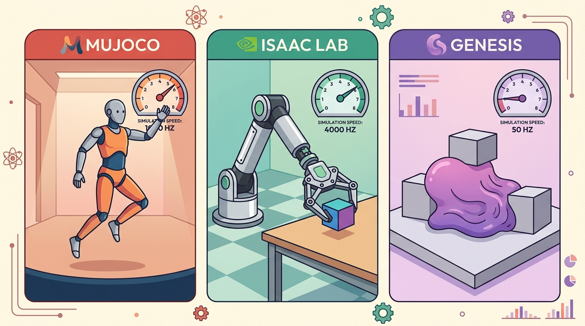

"The next scene might be designed by a human, generated by a model, or both. The robot still has to touch it."
A Scene-Building AI Agent

This section assumes familiarity with rigid-body simulation and the MJCF asset pipeline from section 11.2. The generative scene workflow introduced here is extended in section 13.3, which covers automatic curriculum and parameter randomization over generated scenes. The GPU throughput assumptions underlying multi-physics training at scale are examined in section 17.2.
A robot must fold a wet dish towel. Rigid-body simulation gives it a flat plane that never bunches; the policy trains successfully in sim and fails on the first real grasp. This is the sim-to-real gap at its most concrete, and it is exactly the gap that multi-physics simulation was built to close. Genesis arrives at the moment when embodied AI research is scaling to tasks where cloth, liquids, and deformable objects are not edge cases but everyday requirements. Here you will audit Genesis's unified physics engine, evaluate its generative scene pipeline, and build the judgment to decide when its added complexity is justified by measurable policy gains.
Why Multi-Physics Matters
Pour water into a mug inside MuJoCo and nothing happens: the liquid does not exist, because the engine has no concept of a fluid to pour. Rigid-body engines like MuJoCo and Bullet handle a huge share of robot-learning work (legged locomotion on ANYmal, peg-in-hole insertion, box stacking), but embodied AI routinely touches materials that do not behave like clean rigid boxes: a folded dish towel, water poured into a mug, the deformable produce a kitchen robot must grasp, the gravel a Spot quadruped crosses, and the cables a manipulator must route. Multi-physics simulators try to reduce the boundary between "the simulator can model this" and "we need a custom hack." Genesis belongs in this conversation because it presents multi-physics as a core design goal, not an add-on bolted onto a rigid-body engine. Figure 11.6B traces how this design plays out end to end, from scene generation through a unified physics step to rendered observations and policy training.
The key validation question is coupling. A cloth model, a liquid model, or a deformable object model matters only if its interaction with the robot changes the policy's action, reward, or failure mode. If the policy would behave the same after replacing the material with a rigid proxy, the multi-physics feature is visually interesting but not task-critical. Informal reports from the embodied AI community (circa 2023-2024) describe the pattern. Teams trained cloth-folding policies for tens of thousands of episodes in rigid-body simulators and achieved near-zero real-world success. After they switched to a mass-spring cloth model in the same task, the policy matched that sim performance in a fraction of the episodes and transferred on early hardware trials. To put that concretely: 80,000 episodes on a rigid proxy produced a policy that failed every real grasp; 400 episodes on a cloth model produced one that transferred on the first hardware trial, a 200x reduction in training cost driven entirely by whether the simulator could produce a wrinkle. The difference was not the algorithm; it was whether the simulator could produce the bunching behavior the real cloth actually exhibits. A simulator that cannot model the material the robot must touch is not a training environment: it is a controlled fantasy.
For embodied AI, a simulator is not only a step function. It is also an asset pipeline: objects, materials, lighting, cameras, labels, tasks, rewards, and demonstrations. Genesis is interesting because it treats scene generation and simulation as connected problems.
What To Validate Before Adoption
That connection between scene generation and simulation is exactly what makes Genesis powerful, and also what makes it harder to vet, so before adopting it you need a checklist that probes both halves. Because Genesis is newer than MuJoCo, Drake, ROS 2, and Gazebo, the adoption checklist should be stricter. Do not compare broad marketing claims. Compare one task: same robot, same scene, same metric, same random seeds where possible, and the same failure taxonomy.
For generated scenes, add two extra checks. First, validate semantics: the generated object labels, affordances, and task goals must match what the policy is asked to do. Second, validate physics: masses, friction coefficients, joint limits, deformable parameters, and sensor settings must vary in the ranges that matter for transfer, not only in ways that make screenshots look varied, the discipline that visual, physics, sensor, and task randomization formalizes.
| Need | Why Genesis may help | Validation test |
|---|---|---|
| Python-first research code | Readable simulator scripts can shorten iteration | Build a minimal custom task without editing engine internals |
| Multi-physics tasks | Unified engine targets more than rigid bodies | Reproduce one material interaction you care about |
| Rendered perception data | Nyx rendering may support visual training data | Compare image labels, lighting, and camera outputs |
| Generated assets or tasks | Generative workflows may speed scene creation | Audit generated scenes for physical and semantic validity |
Consider a bimanual robot folding a dish towel. A rigid-body simulator assigns fixed normals and ignores inter-fiber friction, so the policy learns to "fold" a flat plane that never bunches. On hardware, the cloth bunches at the first corner grasp and the task fails before step two. Model the cloth instead as a mass-spring mesh with per-edge stretch stiffness (1,000 to 10,000 N/m for cotton) and damping (10 to 50 Ns/m), and the simulator reproduces the bunching, giving the policy a chance to learn a corrective re-grasp. The coupling test asks one question: does removing the cloth model change the reward trajectory? If it does, multi-physics is task-critical and its added cost is justified.
A Scene Audit Pattern
Code Fragment 1 gives a small JSON-style audit for generated or hand-authored scenes. The goal is to prevent a common mistake: evaluating a policy in scenes that look diverse but share the same hidden physics.
# Audit a simulated scene for diversity that affects robot behavior.
# This lightweight check works before choosing Genesis or any other engine.
# The output highlights missing variation that could weaken evaluation.
scene = {
"objects": ["mug", "spoon", "cloth"],
"materials": ["ceramic", "metal", "fabric"],
"physics_params": ["mass", "friction", "joint_limits"],
"sensors": ["rgb", "depth", "segmentation"],
}
required = {"objects", "materials", "physics_params", "sensors"}
missing = sorted(required - scene.keys())
has_contact_variation = "friction" in scene["physics_params"]
print(f"missing fields: {missing}")
print(f"contact variation: {has_contact_variation}")missing fields: [] contact variation: True
scene dictionary (objects, materials, physics_params, sensors) that flags any missing field and reports whether friction is present in physics_params as a proxy for contact variation.Algorithm: Generative Multi-Physics Scene Validation
Input: Generated scene description $S = \{O, M, \Phi, \Sigma\}$ where $O$ is the object set, $M$ is the material set, $\Phi = \{\mu, k_s, k_d, m\}$ is the physics parameter set (friction $\mu$, stretch stiffness $k_s$, damping $k_d$, mass $m$), and $\Sigma$ is the sensor configuration; task reward function $R(\tau)$ over trajectory $\tau$; baseline rigid-body policy $\pi_0$
Output: Adoption decision $d \in \{\text{adopt}, \text{reject}, \text{simplify}\}$; validated scene $S^*$; audit report $A$
- Identify the dominant physical risk: determine whether the task involves cloth, fluid, soft bodies, or granular terrain. If all contacts are rigid, set a flag $\delta_{\text{rigid}} = 1$ and skip to step 7.
- For each material $m_i \in M$, check that $\Phi_i$ varies within the ranges that matter for transfer: friction $\mu \in [0.1, 1.5]$, cloth stiffness $k_s \in [10^3, 10^4]$ N/m, damping $k_d \in [10, 50]$ Ns/m. Flag any parameter fixed at a single value as $\Phi_i^{\text{frozen}}$.
- Validate semantic labels: for each object $o_j \in O$, verify that affordance labels and task goals assigned by the generator match the policy's action space $\mathcal{A}$. Reject any $o_j$ whose label is semantically inconsistent with the intended manipulation.
- Run the coupling test: compute $\Delta R = |R(\tau_{\text{multi}}) - R(\tau_{\text{rigid}})|$ by evaluating $\pi_0$ in both the multi-physics scene and a rigid proxy. If $\Delta R < \epsilon$ (where $\epsilon$ is a task-defined threshold), conclude multi-physics is not task-critical.
- Validate the timestep: set $\Delta t$ to the proposed integration step and simulate a 10-second horizon. Measure per-material energy drift $\delta E_i$. If any $\delta E_i > 1\%$, reduce $\Delta t$ or simplify the material model, recording the tradeoff in the audit report $A$.
- Audit sensor outputs $\Sigma$: confirm that RGB, depth, and segmentation labels vary under changes to lighting and camera pose, not only under changes to object geometry. Add fields $\texttt{lighting}$ and $\texttt{task\_labels}$ to $S$.
- Compile the audit report $A = \{S^*, \Phi^{\text{frozen}}, \delta E, \Delta R, \delta_{\text{rigid}}, \text{seed}, \text{baseline}\}$. Set $d = \text{adopt}$ if $\Delta R \geq \epsilon$ and all $\delta E_i \leq 1\%$; set $d = \text{simplify}$ if $\Delta R \geq \epsilon$ but timestep must be reduced; set $d = \text{reject}$ if $\Delta R < \epsilon$.
Step-Through: Coupling Test on a Cloth-Fold Task
Trace the coupling test from Algorithm 11.6 (step 4) with concrete numbers for a one-corner towel grasp. Step 1: identify the dominant risk, the task involves cloth, so $\delta_{\text{rigid}} = 0$ and we do not skip. Step 2: check parameters, the generator set stretch stiffness $k_s = 4{,}000$ N/m (inside $[10^3, 10^4]$, pass) but froze friction at a single $\mu = 0.5$, so we flag $\Phi^{\text{frozen}} = \{\mu\}$. Step 4: run the rollout twice with the same seed. The multi-physics scene returns cumulative reward $R(\tau_{\text{multi}}) = 0.82$ (the policy re-grasps after the corner bunches); the rigid proxy returns $R(\tau_{\text{rigid}}) = 0.31$ (the flat plane never bunches, so the learned re-grasp is never triggered and the towel slips). Then $\Delta R = |0.82 - 0.31| = 0.51$. With task threshold $\epsilon = 0.05$, we have $0.51 \geq 0.05$, so multi-physics is task-critical. Step 5: simulate 10 s and measure cloth energy drift $\delta E = 0.4\%$, under the 1% bound, so the timestep stays. Step 7: since $\Delta R \geq \epsilon$ and $\delta E \leq 1\%$, the decision is $d = \text{adopt}$, with $\Phi^{\text{frozen}} = \{\mu\}$ logged as the one parameter still to vary before training.
The hand-written scene audit is 18 lines and only checks metadata. In a Genesis workflow, the simulator and generator should create scenes, render observations, and expose physical parameters through Python APIs. The shortcut is useful only if you still inspect the generated assets and record the assumptions that matter for transfer.
Where Genesis Fits
With the audit pattern in hand to separate real physical diversity from visual window dressing, you can ask the practical question of which projects actually warrant Genesis over a more established tool. Genesis is most compelling for researchers who want fast Pythonic iteration, multi-physics experiments, rendering, and generated scene or task workflows. Its documented design targets include a unified Smoothed Particle Hydrodynamics (SPH) fluid solver, Finite Element Method (FEM)-based deformable body simulation, and a particle-based cloth model. The same Python API exposes all three alongside rigid articulations. The Nyx rendering backend targets path-traced photorealism for visual policy training rather than the rasterized outputs typical of Isaac Lab or MuJoCo's built-in renderer. It goes beyond what physics simulators model and treats perception fidelity as a first-class concern.
Why Path Tracing Earns Its Cost
Photorealistic rendering matters because policies trained on rasterized images exploit lighting shortcuts. Flat ambient shading produces consistent edge gradients. Those gradients disappear under the directional and indirect lighting a real camera sees. A grasping policy that relies on those shortcuts can fail at first deployment: the shadow under a mug falls in a different direction and the policy misses the grasp. Path tracing removes the shortcut by simulating light transport physically. Each pixel accumulates samples from rays that bounce through the scene. The renderer computes direct illumination, inter-object color bleeding, and caustics. The result contains the same occlusion and specular cues a real sensor captures. The cost is render time per frame, so Nyx is most justified when the bottleneck is perception generalization rather than physics throughput.
Rasterization is like painting a room by rolling a single coat of flat paint: fast, consistent, but every surface ends up the same dull matte regardless of what the real materials would do. Path tracing is like letting sunlight actually enter the room: the light bounces off the glossy worktop, bleeds orange from a fruit bowl onto the wall beside it, and pools in the shadow under the counter exactly as a camera sensor would see it. Each extra bounce costs time, but the result is that a perception model trained on those images has seen the same occlusions, color bleeds, and specular highlights it will encounter in the real world, rather than a shortcut that exists only in the renderer.
A manipulation researcher studying cloth-covered objects might prototype in Genesis because rigid-body-only simulation misses the central phenomenon. A team training a standard benchmark policy may choose ManiSkill or MuJoCo first because comparison against prior work matters more than broad multi-physics coverage.
Real-World Application: Toyota Research Institute Soft-Object Manipulation
Toyota Research Institute's home-robot program trains policies to handle deformable kitchen items (towels, bagged groceries, produce) where rigid-body sim collapses the very phenomenon being learned. Their workflow mirrors this section's coupling discipline: a deformable solver models the cloth or bag so the policy can learn corrective re-grasps, and material parameters are calibrated against real demonstrations rather than left at simulator defaults before any sim-to-real transfer.
Choose a simulator by task contract, not reputation. Record the dominant physical risk, required sensor model, throughput target, asset format, and integration boundary, then run the same task panel before comparing tools.
Multi-physics coupling is expensive and fragile at large timesteps. Genesis, like other unified-engine simulators, requires smaller integration steps when simulating cloth or fluid alongside rigid contacts: a timestep of 1 ms that is stable for a rigid manipulator may produce divergent cloth oscillations or fluid particle tunneling at the same configuration. Before scaling to GPU-parallel training, verify that your chosen timestep keeps per-material energy drift below 1% over a 10-second horizon. If it does not, either reduce the timestep (cutting throughput) or simplify the material model, and document which choice you made so comparisons against rigid-body baselines remain valid.
Generated scenes can increase visual variety while leaving task physics narrow. Always audit material parameters, contacts, joint limits, and sensors, not only object categories and camera views.
A common assumption is that choosing a multi-physics simulator like Genesis closes the sim-to-real gap by default. This is wrong: the simulator's ability to model cloth, fluids, or soft bodies only helps if those material parameters are calibrated to match real-world measurements. An uncalibrated cloth stiffness or a default friction value pulled from documentation is still a fiction the real robot will contradict on the first contact. The correct mental model is that multi-physics gives you more dimensions in which to be accurate, but each added dimension is also one more dimension in which to be wrong. Fidelity requires measuring or fitting physical parameters from real hardware data, running the coupling test to confirm that changing those parameters shifts reward, and treating the simulator's default values as placeholders rather than ground truth.
Expected output: A Genesis scene audit should include the generated asset source, material parameters, contact parameters, sensor settings, semantic labels, random seed, and a comparison against a rigid-body baseline when multi-physics is the claimed advantage.
Generated worlds are useful only when they are diverse in the dimensions the robot feels. A thousand new mugs with the same friction are one physics example wearing many costumes.
Project Ideas
Beginner (weekend): Build a MuJoCo cloth-contact benchmark by wrapping a MuJoCo rigid-body scene in a Gymnasium environment, then swap in a Genesis cloth model for the same task and compare reward curves over 5,000 episodes. The key challenge is getting both environments to expose identical observation and action spaces so the comparison is fair without re-tuning the policy.
Intermediate (1-2 weeks): Build a generative scene auditor for Genesis that samples 50 scenes from a procedural generator, runs the coupling test from Algorithm 11.6 automatically using a pre-trained LeRobot policy, and flags any scene where removing the cloth or fluid model changes cumulative reward by less than 5%. The key challenge is scripting the rigid-body proxy swap inside the Genesis Python API so the coupling test runs without manual intervention for each sampled scene.
What physical phenomenon in your task cannot be modeled well by a rigid-body-only simulator? If none, Genesis may still be useful, but multi-physics is not the reason.
Add two fields to Code Fragment 1: lighting and task_labels. Explain how each field can change a perception policy without changing the underlying physics.
Lab: Watch the Coupling Signal Appear When You Add a Cloth Model
Goal: Empirically confirm that a deformable material model changes physical behavior in a way a rigid proxy cannot, the core claim behind multi-physics adoption.
Tools needed: Python 3.11+, a pip install genesis-world environment (or MuJoCo with its native cloth flex plugin if Genesis install is unavailable), and matplotlib.
Steps (about 20-30 minutes): Build a tiny scene: a flat square mesh (the towel) draped over a fixed horizontal bar, dropped under gravity for 2 seconds. Run it twice. Run A: treat the square as a single rigid body. Run B: model it as a mass-spring or FEM cloth sheet with stretch stiffness $k_s = 4{,}000$ N/m and damping $k_d = 30$ Ns/m.
What to vary: stiffness $k_s$ across $\{500, 4000, 10000\}$ N/m, and the integration timestep across $\{1\text{ ms}, 5\text{ ms}\}$.
What to observe: Log the lowest vertex height each frame and plot it. The rigid run pivots stiffly and never drapes; the cloth run folds over the bar and the lowest point hangs far lower. Note how low stiffness drapes more, and how the 5 ms step makes the cloth oscillate or tunnel through the bar while 1 ms stays stable, the per-material energy-drift failure mode this section warns about. The gap between the two height curves is the coupling signal: visible proof that a rigid proxy would have hidden the very behavior the policy must learn.
1. Differentiable multi-physics for contact-parameter identification. Instead of hand-tuning friction and deformable stiffness, researchers now back-propagate through the simulation step to fit parameters to real video or force-torque data. DiffTaichi (Hu et al., 2020) established the pattern, and active 2024-2025 work at MIT CSAIL and CMU Robotics uses differentiable cloth and fluid solvers to close the loop between generated scenes and measured ground truth, so that a Genesis training run can start from calibrated, not default, parameters.
2. Foundation-model-driven task and reward generation. Large language and vision models are being used to author task definitions, reward functions, and scene semantics inside simulation loops. Work from Stanford's OVAL lab (2024) and NVIDIA Research's Eureka project (Ma et al., 2023; extended 2024) shows that GPT-4-class models can write reward code for Isaac Lab that matches or exceeds human-authored rewards on dexterous manipulation benchmarks, and that pairing these with a generative scene pipeline (such as Genesis) could produce fully automated curriculum pipelines.
3. Neural-physics hybrid simulation for deformable contact. Rather than running a full FEM cloth solver at every substep, several 2024 papers (notably from ETH Zurich's Computational Robotics Lab) learn a neural corrector that patches a coarse rigid-body model with deformation residuals at contact points, cutting simulation cost by 4 to 10x while preserving the behavioral signal the policy needs. Genesis's Python API is a natural insertion point for such hybrid solvers.
Open problem for a PhD student: Physical quality control for generative scene pipelines remains unsolved at scale. A generated scene can be photorealistic under path tracing while silently assigning identical friction to every surface. Current coupling tests (Algorithm 11.6) require a rollout comparison for each sampled scene, which is too slow for the millions of scenes a curriculum pipeline might generate. The open challenge is a fast, zero-shot scene auditor: a model that predicts, from the generated asset description alone, whether the physical parameters will produce behavioral diversity or mere visual variety, without requiring a policy rollout to find out.
Genesis is best read as a frontier platform for Pythonic, generative, multi-physics simulation. Use it when those features answer a real task need, and compare against mature baselines when reporting results.
Section 11.7 completes the simulator map with Drake, SAPIEN, ROS 2, and Gazebo, tools that often decide whether a simulator becomes part of a real robot workflow.
Genesis Team. "Genesis World Documentation."
The official documentation explains Genesis as a physical AI simulation platform with multi-physics, rendering, and a Pythonic interface. It is the best source for current APIs and installation details.
Genesis-Embodied-AI. "Genesis World Repository."
The repository provides source, examples, issues, and release activity. Researchers should inspect it before depending on Genesis for long experiments because the platform is evolving quickly.
Google DeepMind. "MuJoCo Documentation."
MuJoCo remains a mature baseline for rigid-body tasks. It is the right comparison point when a Genesis experiment does not require multi-physics or generated scene workflows.
Isaac Lab Project. "Isaac Lab Documentation."
Isaac Lab is the mature NVIDIA robot-learning framework to compare against Genesis for GPU RL and sensor-rich scenes. It provides a useful baseline for evaluating whether Genesis adds task-specific value.
Alliance for OpenUSD. "OpenUSD Documentation."
OpenUSD gives context for modern scene composition and interchange. Even when using Genesis, readers should understand why richer simulator workflows increasingly depend on structured scene descriptions.